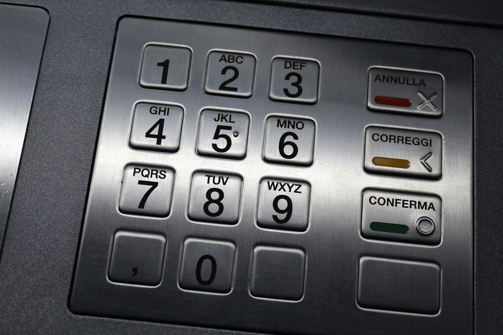

Una tarjeta de Cajero Automático o tarjeta ATM es cualquier tarjeta de pago emitida por una institución financiera que permite a un cliente acceder a un Cajero automático (ATM) con el fin de realizar transacciones, tales como depósitos, retiros de efectivo, obtención de información de la cuenta, entre otras cosas.
Las primeras tarjetas ATM fueron emitidas en 1967 por Barclays en Londres.
Pago con tarjeta electrónica
Tipos de tarjetas magnéticas
Tarjetas de compra
Nos brinda la posibilidad de financiar los consumos efectuados mediante el uso de la misma. En otras palabras el usuario debe pagar el total de sus consumos al vencimiento de cada periodo de pago.
Tarjetas de aplicación en empresas determinadas
Son las figuras más próximas a la tarjeta de uso universal porque operan virtualmente como una de ellas, con la diferencia que son solo eficaces en las distintas sucursales o empresas distribuidoras de alguna gran organización de venta o de servicios.
Tarjetas de identificación
Constituyen una variante operativa menor respecto de la explicada precedentemente. Son empleadas para identificar a su portador en los distintos establecimientos de la emisora, en empresas vinculadas con ella o ante terceros vinculados con la actividad de negocios del portador respecto de la emisora.
Tarjetas para operar con cajeros automáticos
Son entregadas por los bancos que prestan servicios mediante esas máquinas. Tal instrumento habilita al portador para efectuar, en cualquiera de las máquinas del sistema establecido como una red, algunas prestaciones preestablecidas (extracción de dinero, depósitos, pagos de servicios, información).
Uso de tarjeta ATM y tarjetas de débito en un cajero automático
Usando una tarjeta electrónica en un cajero automático
Lea cada paso para aprender lo básico del uso de las tarjetas ATM y tarjetas de débito en un cajero automático. Solicite una tarjeta ATM o tarjeta de débito.
Cuando usted abre una cuenta de cheques, su banco probablemente le ofrezca la oportunidad de solicitar una tarjeta ATM y/o de débito. Si pierde o le roban su tarjeta ATM, póngase en contacto inmediatamente con su banco. Cree un número PIN.
Cajero automático
Para usar su tarjeta en un cajero automático, debe introducir un Número de Identificación Personal (PIN), una combinación secreta de números o letras que usted crea. Su número PIN es como una contraseña secreta. Si alguien conoce su número PIN, podría retirar dinero de su cuenta, por eso ¡nunca comparta su número PIN con nadie! Si usted lo comparte, puede ser considerado responsable del dinero que pierda. Para mantener seguro su dinero, mantenga su PIN en secreto. Manténgase alerta y preste atención.
Introducciendo tarjeta
Debido a que la mayoría de los cajeros automáticos entregan dinero y muchos aceptan depósitos, le conviene mantenerse alerta y estar consciente de los alrededores dondequiera o cuandoquiera que utilice un cajero automático. Siga las instrucciones en pantalla.
Instrucciones en pantalla
No todos los cajeros automáticos funcionan exactamente de la misma manera, pero todos tienen un diseño fácil de usar. Simplemente siga las instrucciones que aparecen en la pantalla del cajero automático que esté usando.
Siguiendo las instrucciones del cajero
Tenga cuidado con los cargos. los cajeros pueden ser operados por otras instituciones financieras. Esta característica es muy útil, pero tenga cuidado con los cargos que podrían cobrarle por el uso del cajero tanto su banco como el propietario del cajero automático. Es importante que sepa cuál es su saldo disponible.

Seleccionando monto a rerirar
Asegúrese de tener suficiente dinero para cubrir sus retiros y cheques. Recuerde que cuando hace un retiro con su tarjeta ATM o tarjeta de débito, el dinero será retirado de su cuenta de cheques. Cuando usted gira un cheque pueden pasar varios días antes de que los fondos sean retirados de su cuenta o el cheque puede procesarse el mismo día. Asimismo, no olvide que cuando deposita un cheque, los fondos pueden estar disponibles para su uso el día laboral siguiente o más tarde, dependiendo de la política de disponibilidad de fondos de su banco. Registre sus transacciones.
Retiro de efectivo
Acostúmbrese a anotar de inmediato sus transacciones en cajeros automáticos y las compras que ha hecho con su tarjeta ATM o de débito en su registro, a fin de no olvidarse. Una vez al mes, compare las cantidades que figuran en los recibos con las de su estado de cuenta para verificar que coincidan. Las tarjetas ATM y de débito son formas seguras y convenientes de obtener dinero en efectivo, hacer depósitos, transferir fondos y hacer compras.
Existen diferentes tipos de tarjetas electrónicas
Tarjeta ATM
Una tarjeta ATM es una tarjeta basada en un número PIN. Esto quiere decir que, además de usar la tarjeta en los cajeros automáticos, tal vez pueda usarla también para hacer compras (introduciendo su número de identificación personal) si el comerciante usa una de las mismas redes electrónicas de ATM que aparecen en el reverso de su tarjeta.
Tarjeta de débito
Una tarjeta de débito tiene un aspecto similar al de una tarjeta ATM, y puede usarla en los cajeros automáticos. La diferencia es que una tarjeta de débito tiene un logotipo de Visa® o MasterCard® en el frente. Eso quiere decir que usted puede usar una tarjeta de débito en cualquier lugar donde se acepten tarjetas de débito Visa® o MasterCard®, por ejemplo, grandes almacenes, restaurantes o en línea.
Tarjeta de crédito
Una tarjeta de débito no es una tarjeta de crédito. Cuando usted usa su tarjeta de débito, el dinero se deduce de su cuenta de cheques. Con una tarjeta de crédito, está tomando el dinero prestado que deberá pagar más tarde. Las tarjetas ATM y tarjetas de débito le permiten usar cajeros automáticos, una manera segura y conveniente de manejar su dinero. Hay millones de cajeros automáticos en todo el mundo y puede usar muchos de ellos las 24 horas del día, los 7 días de la semana. Las tarjetas ATM y tarjetas de débito también son una manera conveniente de hacer compras sin llevar dinero en efectivo, lo cual le ayuda a llevar mejor cuenta del dinero que gasta.